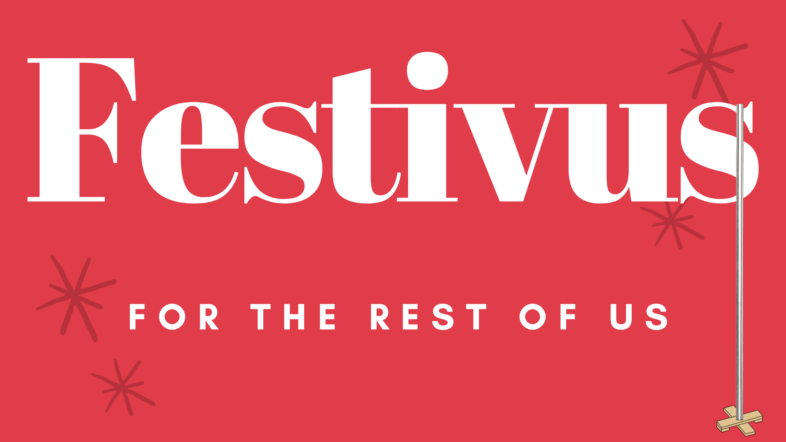

Content warning: rough language ahead. You’ve been warned.
Jerry Seinfeld isn’t on board with Festivus this year.
I get it, I do. And I respect it. But I’m gonna air me some grievances. My therapist has continued to insist that I do what I need and not to feel guilty about it, and right now I need to air some fucking grievances. So strap in folks; here we go.
Running has been a sick joke for most of this year. I’ve been logging miles with some kind of GPS watch since mid-2011, and 2020 has been the lowest-mileage year by a massive margin. For comparison, long-time readers may remember the boondoggles of 2015-2016 when I had metatarsalgia in my feet. Both those years, I still managed to tip the 1,000-mile scale. This year? 711 miles. Fuck that shit. Running wasn’t an escape; it was a fucking trap of preferring the evil I knew over the evil I didn’t.
Of course, halting my running didn’t help much, either. I was still exhausted beyond all measures, and not just physically: mentally, emotionally, and grammatically burned. out. I managed a couple of walks most days, largely amounting to 10,000 steps or thereabouts, so I guess I met the minimum recommended daily physical activity threshold for the most part. But boy did running leave me stuck with the bill this year.
On the note of bills, let’s talk about how much help we’ve gotten in that area, shall we? As in, fucking none? We’d have gotten more tangible pandemic assistance if we’d wholesale replaced our Georgia state and US federal governments with fucking nail salons, as opposed to the leadership vacuums from Kemp, Congress, and the White House. Jesus goddamn tap-dancing Christ. Frank Underwood in House of Cards killed people, but he got things done in the process. These Republicans just… kill people; whether it’s because of willful incompetence or callous indifference I can’t say, but holy shit: literal poop-flinging monkeys could have accomplished more in their steads. You have to put forth actual effort to be this fucking ineffective. You wanted individualistic self-sufficiency? Well, this is what it looks like, fuckers: if you’ve already got money, you’re fine. If not, welp.
I’ve felt a real kinship these past several months with Jeff Daniels’ Will McAvoy, particularly as he picks apart this fantasy of America being the “greatest country in the world.” What the fuck does that even mean? That we lead the world in COVID cases and deaths? That we’re so star-spangled awesome that anyone with an internet connection can be an armchair epidemiologist? That some so-called moderates are so concerned with curating their centrist appearance that they completely lose sight of the fact that not all (or even most) issues have two sides? That an entire political spectrum in this country has managed to openly flirt with becoming the very thing we fought a war against barely a century ago? That we’re so worried about giving anyone slightly more than they “deserve” that we’ll decimate public institutions, neglect infrastructure, and reinforce existing inequities, so that only the people who already had money will succeed? Are we really this collectively fucking stupid?
Twitter is a fucking nazi cesspool. Facebook is even worse, and Amazon takes the cake for most unethical CEO. Google isn’t innocent, either: I’ve lost any respect I had for my former employer after they fired Timnit Gebru. Then I lost respect for luminaries like Jeff Dean after he doubled-down on some shady post-hoc justification that simultaneously made no sense and also revealed that Google has no collective interest in addressing its structural issues. Then, I lost respect for a number of current Googlers whose work I’ve admired over the years of following them since graduate school when they kept quiet over this whole thing. Meanwhile, Google is being hammered in EU antitrust courts and I frankly couldn’t be happier about it. I hope Facebook gets splintered into dozens of tiny pieces.
Can I just say again–people who selectively listen to experts or “experts” because they confirm what said people already believed can go jump in this fire.
Sex work is work, and The West Wing really got this one wrong. Donna, in fact, had it right.
Sex and the City, for as much as it may have been ahead of its time in general, is super problematic around trans and nonbinary folks.
I have to divorce J.K. Rowling the person from the author of the Harry Potter books, because she is doing literally everything possible to shit all over what is left of her legacy. I don’t know what her problem with trans people is, or why she’s so threatened by them, but she can likewise join the aforementioned people who listen only to the “experts” they already agree with.
Brandon Sanderson doesn’t write books nearly fast enough.
James S.A. Corey doesn’t write books nearly fast enough.
Patrick Rothfuss doesn’t write books nearly fast enough.
Oh yeah, a massive FUCK YOU to the folks I’ve been seeing on Instagram who don’t seem to realize COVID is a thing? Who keep gathering with more people than could possibly be in their pods? Who post pictures of themselves at gyms, bars, restaurants, group runs, and family gatherings for the holidays? They truly are the fuckwads from high school and college who would go off and party instead of working on the team project, difference being that when they invariably came back for the presentation, they’ll end up spontaneously combusting and killing both themselves, their teammates, and half their classmates. I’ve been aggressively un-following these dipshits because if they can’t think about anyone other than themselves in the midst of a global pandemic, why would I want to associate with them when the stakes are eventually more mundane? There are a lot of folks who’ve shown me exactly who they are during this pandemic and they’re not anyone I care to know once COVID is done.
SERIOUSLY. A MODICUM OF LEADERSHIP WOULD HAVE PREVENTED THOUSANDS OF NEEDLESS DEATHS, YOU STAR SPANGLED CESSPOOLS.
Telecommunications in the United States is a fucking travesty. In any other [western] country there are dozens of companies in close competition with one another. Here, we have what amounts to local monopolies on broadband, and an effective duopoly on cell providers. And this gets passed off as “innovation”? Our telecom industry is 20 years behind the rest of the world!
The Georgia Board of Regents: Governor Kemp’s cronies, or just that fucking incompetent? They couldn’t be bothered to implement a mask mandate back at the start of the first COVID surge until the entire university system was practically in a state of open rebellion. Rumor has it there’s really only a couple bad apples among them, but–in much the same vein as the United States Senate–the fact that a single moronic board member can bring everything to a screeching halt is a bug, not a feature. Ted Cruz can bring the Senate to its knees simply by virtue of his vapid tripe; he doesn’t also need a legal basis for his subversion of democracy.
Wear. A. Goddamn. Mask. Fuck.
When did it become a feature of a functioning democracy to allow a decaying Confederate monument from Kentucky to singlehandedly decide the fate of any and all legislation that made its way to the US Senate?
Perhaps the single biggest driver of my growing cynicism has been not the pathetic ineptitudes of our government leaders or even the disinformation being sown by talking heads making untold millions of dollars, but instead the seemingly smart, incisive, and compassionate individuals I knew before the pandemic (or even before the election of Trump) who have since turned into people I no longer recognize. Of course I realize the “change” was, in fact, there all along–it is only my perception that has changed. But it has been truly disheartening and enraging to see acquaintances, friends, and even family here in Athens and elsewhere in the United States who forward along conspiracy theories, repeat hate-filled talking points, and play the role of armchair epidemiologists in magnifying misleading or outright false information around COVID-19. From claiming that supplements can reduce severity of COVID symptoms, to somehow dismissing US oubreak numbers by equating them with China, and since “China’s numbers are fudged” therefore the US is doing just fine, to demonizing and even threatening the livelihood of health care workers for the crime of doing their jobs, to giving Trump credit for the rollout of the Pfizer and Moderna vaccines, to continuing to push back against and ignoring the advice of actual medical and public health experts.
Seems reasonable, right? Until you include the surrounding context: this person initially claimed Trump should take credit for “Operation Warp Speed,” followed by a hand-waving rationalization of the slow vaccine rollout by blaming supply chain hiccups that come with large-scale product manufacturing. Ignoring, of course, that a vaccine has literally been the single goal of the entire US public health sector since January 2020; how the infrastructure for such a rollout wasn’t in place by the summer is a sin worthy of excommunication. But rather than admit as much, we get the above response.
It’s infuriating that we can’t just let the experts do their fucking jobs; instead, we have to stake out some pointless fucking pseudo-centrist landscape that doesn’t exist, for the purpose of… what? Appealing to the better demons of both sides? That would be reasonable, except for the small problem of one side being a highly imperfect conglomerate of diverse and often conflicting viewpoints, and the other side being a militaristic theocrat’s wet dream. But sure, states’ rights and framers’ intent and all that.
Oh, that reminds me: I am fucking DONE with originalism (yes, that goes for the Bible too). There is no 21st-century world in which the intentions of 18th century slaveholders would be remotely interesting, worth considering, or at all relevant. Much like how an argument of free speech is effectively a concession, an argument of framers’ intent is likewise an indication that your argument stands on the rhetorical equivalent of a sinkhole; continuing to scream “bUt ThE fRaMeRs!” only reveals your partisan / intellectual / insert motivated reasoning hackery here.
Oh, one final grievance. With all due respect to Bill Watterson: excessively positive people. In fact, we’ve even come up with a name for this: toxic positivity. Emphasizing the positive in a given situation, with the unstated assumption that said positives entirely cancel out all negatives. It’s been coming up a lot in the context of the pandemic: “well the pandemic has been bad but at least I haven’t had to see my boss as much!”, as if the two things were even remotely on the same playing field. Granted, it’s a specific incarnation of the more general ALWAYS LOOK ON THE BRIGHT SIDE mantra, but it’s important to understand that, as complex human beings, we are capable of holding more than one truth in our heads simultaneously.
2020 is both the year Z entered our lives, and it can also die in a fucking fire. Both are true.
Citation
@online{quinn2020,
author = {Quinn, Shannon},
title = {Festivus for the {Restivus}},
date = {2020-12-30},
url = {https://magsol.github.io/2020-12-30-festivus-for-the-restivus},
langid = {en}
}